Per fer un esborrat de pantalla, el que cal fer és donar a cada un dels píxels el color que volem com a color de fons de la nostre imatge. Així doncs, hem d'indicar d'alguna manera quin és el color d'esborrat que usarem, és a dir, quin és el color de fons de la nostra imatge.
En OpenGL el color de cada un dels píxels es guarda en el buffer de color (o frame buffer), i es pot guardar en format RGBA o com a índex a una taula de colors. Avui en dia en general treballem amb el format RGBA i aquest és el que usarem habitualment.
Així doncs, el que cal fer per a esborrar una finestra en la que volem tornar a pintar és primer indicar quin color usarem per a esborrar (color de fons) i després donar l'ordre d'esborrat. Per a establir el color que volem que s'usi per a fer l'esborrat cal usar la crida
void glClearColor (GLclampf red, GLclampf green,
GLclampf blue, GLclampf alpha)
Aquesta crida estableix el color RGBA que usarà la crida "glClear" per a esborrar el frame buffer. Els 4 paràmetres són els valors de les components de vermell, verd, blau i alfa del color amb el que es vol esborrar. Aquests valors estan restringits al rang [0,1].
Un cop hem establert el color que volem per a esborrar, cal indicar a OpenGL que esborri la finestra. Això es fa mitjançant la crida
void glClear (GLbitfield mask)
Normalment els que interessen són el buffer de la imatge (buffer de color) i el Z-buffer:
glClear (GL_COLOR_BUFFER_BIT | GL_DEPTH_BUFFER_BIT);
/* esborra el buffer de color i el Z-buffer */
Les primitives gràfiques d'OpenGL són punts, línies i polígons. Totes elles es descriuen en termes dels seus respectius vèrtexs. Cada vèrtex es caracteritza per 2 o 3 números que corresponen a les coordenades dels eixos cartesians -(x,y) en 2D o (x,y,z) en 3D respectivament-. També es poden representar mitjançant les coordenades homogènies on cada punt es descriu amb 4 números (x,y,z,w).
La gran diferència amb les altres llibreries gràfiques és que els vèrtexs dels objectes es donen en coordenades de món i la implementació d'OpenGL s'encarrega de la transformació món-pantalla.
Degut a les diferents opcions descrites per a representar un vèrtex, OpenGL ofereix una família de rutines depenent del nombre i tipus dels seus paràmetres:
void glVertex{234}{sifd}[v] (TYPE coords)
El que hi ha entre claus ({ }) forma part del nom de la rutina. La rutina pot prendre 2, 3 o 4 paràmetres en els diferents tipus: short, int, float, double. Opcionalment aquests paràmetres es poden donar en forma de vector (v). Veiem alguns exemples de possibles crides:
glVertex2s (1,2); /* coordenades x,y tipus short */
glVertex2i (2300,43); /* coordenades x,y tipus int */
glVwertex3f (1.0,1.0,5.87) /* coordenades x,y,z tipus float */
float vector[3];
glVertex3fv (vector);
OpenGL interpreta qualsevol seqüència de vèrtexs depenent del seu context. El context es declara en el parell de rutines glBegin (GLenum mode) i glEnd() i qualsevol sentència glVertex* que es trobi en mig d'aquestes dues s'interpreta d'acord al valor del mode.
El patró de definició aleshores seria:
glBegin (TIPUS_PRIMITIVA);
glVertex3f (X0, Y0, Z0); /* defineix vertex 0 */
glVertex3f (X1, Y1, Z1); /* defineix vertex 1 */
...
glVertex3f (Xn-1, Yn-1, Zn-1); /* defineix vertex n-1 */
glEnd ();
| GL_POINTS | Pinta un punt a cada un dels n vèrtexs | 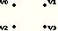 |
| GL_LINES | Pinta línies desconectades | 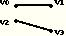 |
| GL_POLYGON | Pinta un polígon amb vèrtexs V0,..,Vn-1. n ha de ser com a mínim 3 i el polígon ha de ser convex i no intersecar les seves arestes | 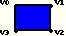 |
| GL_TRIANGLES | Pinta una sèrie de triangles. Si n no és múltiple de 3 ignora els vèrtexs restants | 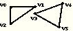 |
| GL_LINE_STRIP | Pinta una sèrie de línies seguides. (V0-V1, V1-V2, ...). Poden intersecar entre elles. Poligonal oberta. | 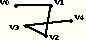 |
| GL_LINE_LOOP | Igual que GL_LINE_STRIP però tancant la poligonal. Poligonal tancada. | 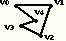 |
| GL_QUADS | Pinta una sèrie de quadrilàters usant l'agrupació de vèrtexs: V0-V1-V2-V3, V4-V5-V6-V7, etc. | 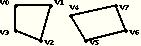 |
| GL_QUAD_STRIP | Pinta una sèrie de quadrilàters consecutius fent: V0-V1-V3-V2, V2-V3-V5-V4, etc. | 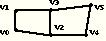 |
| GL_TRIANGLE_STRIP | Pinta una sèrie de triangles consecutius fent: V0-V1-V2, V2-V1-V3, V2-V3-V4, etc. | 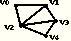 |
| GL_TRIANGLE_FAN | Similar a GL_TRIANGLE_STRIP però amb la peculiaritat que tots els triangles comparteixen el vèrtex V0: V0-V1-V2, V0-V2-V3, V0-V3-V4, etc. | 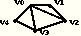 |
És a dir, que si definim una seqüència de crides com per exemple:
glBegin (GL_POLYGON);
glVertex2f (1.0, 2.5); /* primer vèrtex */
glVertex2f (3.0, 3.0); /* segon vèrtex */
glVertex2f (5.0, 2.5); /* tercer vèrtex */
glVertex2f (4.0, 1.0); /* quart vèrtex */
glVertex2f (1.0, 0.0); /* cinquè i últim vèrtex */
glEnd ();
| 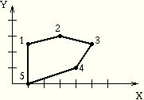 |
OpenGL manté un color actual en la seva informació d'estat, i aquest color és el que fa servir per a pintar. Existeix una crida de la llibreria que permet canviar el color actual. De la mateixa manera que passava amb la crida per a pintar un vèrtex, aquesta crida per a canviar el color pot ser usada de forma diferent segons el nombre i el tipus dels paràmetres. El nombre de paràmetres pot ser 3 o 4 depenent que s'utilitzi un valor per a la component alpha del color o no.
Les components del color s'especifiquen en ordre donant valors pel vermell (red), pel verd (green) i pel blau (blue). Els valors de les components estan dins del rang [0..1], on 1 correspon a màxima intensitat. En el cas que el seu tipus sigui un unsigned byte el rang passa a ser [0..255]. Així doncs podem tenir crides de la forma següent:
glColor3f (1.0, 0.0, 0.0); /* vermell usant floats */
glColor3ub (0, 255, 0); /* verd usant unsigned bytes */
GLfloat mycolour[3] = {0,0,1};
glColor3fv (mycolour); /* blau usant vector de floats */
La quarta component del color és la component alpha. Aquesta component és la que dona el nivell de transparència associat a aquest color i per tant permet la composició d'imatges en un mateix punt. En realitat podriem dir que el valor de la component alpha és el grau d'opacitat del color, ja que si aquest valor és 0.0 el color és totalment transparent, i si el valor és 1.0 el color és totalment opac. En les crides que no especifiquen aquesta component del color, el valor per defecte que se li dona és de 1.0 (color opac).
Aquesta crida a "glColor" és una de les que s'accepta que estigui
situada dins d'un bloc de definició de primitiva, és a dir entre un
"glBegin" i un "glEnd". Això implica també que es permet donar color
diferent als diferents vèrtexs d'una primitiva.
En OpenGL és necessari activar certes característiques per a que siguin efectives. Aquest és el cas del Z-buffer, o de la il·luminació entre d'altres. Aquesta activació de característiques es fa mitjançant la crida a "glEnable", a la que se li passa com a paràmetre un valor que és el que indica a OpenGL què és el que es vol activar.
void glEnable (GLenum cap)
En el cas del Z-buffer el valor que ha de prendre el paràmetre que li passem a la crida és GL_DEPTH_TEST, per tant per a activar el Z-buffer en els nostres programes haurem de fer una crida a
glEnable (GL_DEPTH_TEST);
Els casos d'il·luminació els veurem en la secció corresponent.
Lògicament tot allò que es pot activar s'ha de poder també desactivar quan volguem prescindir de la característica que haviem activat anteriorment. La crida "glDisable" amb el mateix paràmetre faria aquesta funció.
void glDisable (GLenum cap)
Per defecte OpenGL treballa en mode d'omplert de polígons, és a dir, pinta l'interior dels polígons amb el color dels seus vèrtexs. Però en ocasions es pot voler dibuixar l'escena en filferros (wireframe), i per a fer-ho cal canviar el mode de pintat de polígons. La rutina:
void glPolygonMode (GLenum face, GLenum mode)
El segon paràmetre mode especifica el mode en que han de ser pintats els polígons, i els valors que pot prendre són: GL_POINT, GL_LINE i GL_FILL (aquest últim és el que actua per defecte per a tots els polígons de l'escena).
Així doncs si es vol canviar el mode per a dibuixar en filferros només cal fer una crida com la següent:
glPolygonMode (GL_FRONT_AND_BACK, GL_LINE);
En un objecte tancat construït a partir de polígons opacs les cares que miren enrera no són mai visibles. Si l'observador es troba a l'exterior de l'objecte, es pot activar el culling per a descartar els polígons que OpenGL determina que estan al darrera (i per tant no serien visibles). Per a fer això cal utilitzar la crida a
void glCullFace (GLenum mode);
que indica quins polígons han de ser descartats abans de fer la transformació a coordenades de pantalla. El mode pot ser GL_FRONT, GL_BACK o GL_FRONT_AND_BACK indicant si es vol descartar els polígons que estan de cara a l'observador, d'esquena o tots respectivament.
Per a que aquesta crida a "glCullFace" tingui efecte cal activar el mode culling executant la crida a
glEnable (GL_CULL_FACE);
Com ja hem dit al punt primitives gràfiques, OpenGL s'encarrega de fer la transformació món-pantalla i per tant podem donar-li les coordenades dels vèrtexs en coordenades de món (coordenades de l'aplicació 3D). Però de tota manera cal que li especifiquem quina ha de ser aquesta transformació a fer per cada cas. És a dir, li hem de comunicar les dades necessàries per a que pugui fer la transformació.
Com sabem la transformació món-pantalla (3D-pantalla) consta de diferents passos que fan la traducció de coordenades de món a coordenades de pantalla passant per les coordenades de l'observador i les coordenades homogènies.
Coordenades de món
|
V
Coordenades de l'observador
|
V
Coordenades homogènies
|
V
Coordenades de pantalla
En tot moment OpenGL manté dues matrius per a les transformacions: la matriu MODELVIEW que transforma les coordenades de món a coordenades de l'observador; i la matriu PROJECTION que transforma les coordenades de l'observador a coordenades homogènies. Hi ha funcions d'OpenGL que poden actuar sobre totes dues matrius, per tant primer cal seleccionar la matriu amb la que volem traballar en cada moment.
glMatrixMode (GL_MODELVIEW); /* treballar amb la
* matriu MODELVIEW */
glMatrixMode (GL_PROJECTION); /* treballar amb la
* matriu PROJECTION */
Després, en tots dos casos, abans d'especificar cap matriu de transformació és recomenable carregar la matriu identitat:
glLoadIdentity ();
Per a definir les transformacions a coordenades de l'observador i a coordenades homogènies usarem dues rutines que no són propiament del nucli d'OpenGL sinó que pertanyen a una llibreria d'utilitats que sempre es troba en les distribucions d'OpenGL: la llibreria GLU.
La rutina
void gluLookAt (GLdouble eyeX, GLdouble eyeY, GLdouble eyeZ,
GLdouble centerX, GLdouble centerY,
GLdouble centerZ,
GLdouble upX, GLdouble upY, GLdouble upZ)
és la que usarem per a passar a coordenades de l'observador. Aquesta rutina fixa la posició de l'observador (eyeX, eyeY, eyeZ), el centre de l'escena (centerX, centerY, centerZ) y el vector up (upX, upY, upZ). La crida a aquesta rutina doncs l'aplicarem a la matriu MODELVIEW. L'ordre de crides en aquest cas és:
glMatrixMode (GL_MODELVIEW);
glLoadIdentity ();
gluLookAt (eyeX,eyeY,eyeZ,centerX,centerY,centerZ,
upX,upY,upZ);
I per altra banda usarem la rutina
void gluPerspective (GLdouble field_of_view,
GLdouble aspect_ratio,
GLdouble znear, GLdouble zfar)
La crida a aquesta rutina s'aplicarà a la matriu PROJECTION i l'ordre de crides habitual és:
glMatrixMode (GL_PROJECTION);
glLoadIdentity ();
gluPerspective (field_of_view,aspect_ratio,znear,zfar);
Usant la rutina "gluPerspective" el que fem és utilitzar una projecció en perspectiva per a visualitzar la nostre imatge, però també podem voler una projecció ortogonal on el volum de visibilitat és un paral·lelepípede rectangular. Per a fer aquesta projeció OpenGL ens ofereix la rutina
void glOrtho (GLdouble left, GLdouble right,
GLdouble bottom, GLdouble top,
GLdouble near, GLdouble far)
on els punts (left,bottom,-near) i (right,top,-near) representen les cantonades de baix a l'esquerra i dalt a la dreta del pla més proper del paral·lelepípede de visió, i (left,bottom,-far) i (right,top,-far) representen les cantonades de baix a l'esquerra i dalt a la dreta del pla més llunyà del paral·lelepípede de visió. Els valors de near i far tant poden ser positius com negatius.
Si ho volem pel cas especial d'una projecció bidimensional també podem usar la crida a
void gluOrtho2D (GLdouble left, GLdouble right,
GLdouble bottom, GLdouble top)
que és idèntica a la crida tridimensional "glOrtho" excepte que les coordenades z dels objectes de l'escena s'assumeixen entre els valors -1.0 i 1.0.
Per a especificar una transformació a coordenades de pantalla (definició del viewport) s'haurà d'usar la crida a
void glViewport (GLint x, GLint y,
GLsizei width, GLsizei height)
Hi ha també altres transformacions que es poden aplicar, com són directament la translació, rotació o escalat, que es poden aplicar a tota l'escena (afegint aquestes transformacions a una de les matrius, MODELVIEW o PROJECTION), o fins i tot només a un objecte. Per a fer-ho només per a un objecte cal però primer guardar l'estat de la matriu per a tota l'escena per a poder-la recuperar quan s'hagi acabat la transformació per a l'objecte.
La descripció de les rutines de transformacions geomètriques són:
void glTranslated (GLdouble x, GLdouble y, GLdouble z)
void glTranslatef (GLfloat x, GLfloat y, GLfloat z)
void glScaled (GLdouble x, GLdouble y, GLdouble z)
void glScalef (GLfloat x, GLfloat y, GLfloat z)
void glRotated (GLdouble angle, GLdouble x,
GLdouble y, GLdouble z)
void glRotatef (GLfloat angle, GLfloat x,
GLfloat y, GLfloat z)
void glPushMatrix (void)
void glPopMatrix (void)
És a dir, per cada tipus de matriu OpenGL manté una pila de matrius,
en el top de la qual es troba la matriu actual. Quan es fa una crida a
"glPushMatrix" es duplica aquesta matriu actual sobre el top de la
pila, de manera que es pot modificar tenint una còpia en la posició
següent. Quan s'acaba d'actuar amb la còpia de la matriu es pot
recuperar la que es tenia fent la crida a "glPopMatrix", que elimina
la que hi ha actual al top de la pila i per tant deixa la que hi ha a
la següent posició (que és la que haviem volgut conservar).